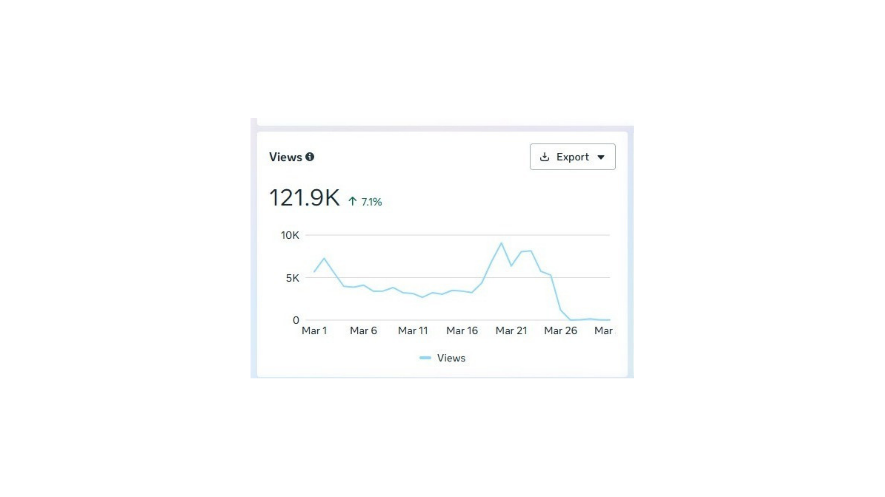
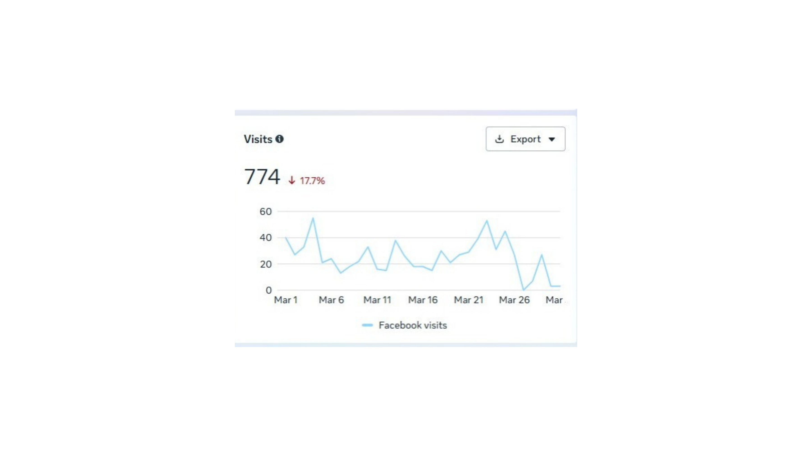
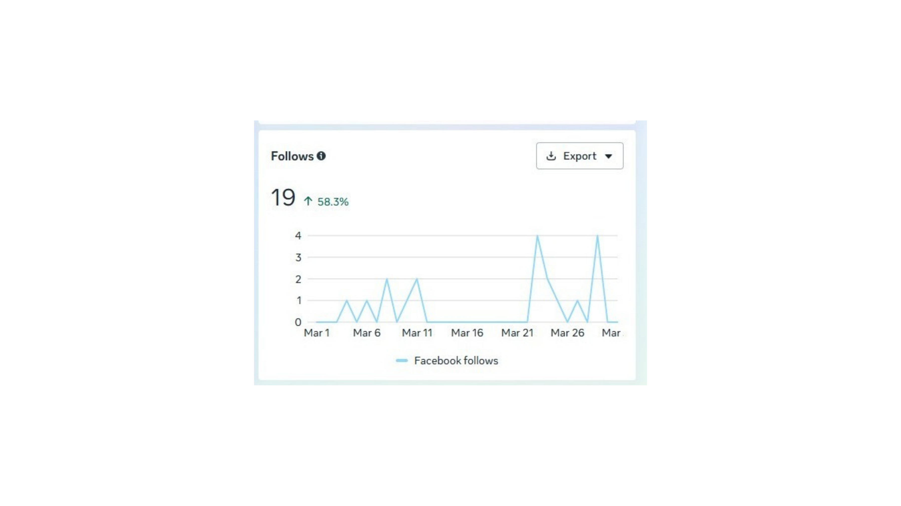
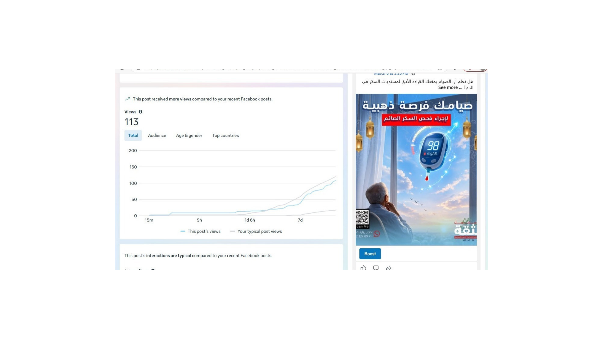

121.9 الف مشاهدة. ذروة الأداء بين 20 و 22 مارس بما يقارب 8 الاف مشاهدة يوميا.

774 زيارة خلال الشهر. فرصة لتحويل المشاهدات المرتفعة الى زيارات عبر دعوات اجراء اوضح.

19 متابع جديد بنمو 58.3%. ذروة المتابعات تتوافق مع ذروة المشاهدات حول 21 و 28 مارس.

حملة رمضان "صيامك فرصة ذهبية" لفحص السكر التراكمي حققت 113 مشاهدة وتجاوزت متوسط الأداء.
حملة "صيامك فرصة ذهبية" تجاوزت المتوسط. نطور سلسلة محتوى صحي موسمي مشابه يربط خدمات المعمل بالمناسبات والمواسم القادمة.
مع 121.9 الف مشاهدة نضيف دعوات اجراء واضحة في كل منشور مثل "احجز فحصك الان" و "زوروا صفحتنا" لتحويل الاهتمام الى خطوات فعلية.
فتح قناة تواصل مباشر مع الجمهور عبر محتوى تفاعلي: استشارات صحية سريعة عبر الرسائل وعروض حصرية لمن يتواصل مباشرة.
51.1% من الجمهور في اسطنبول. نستثمر هذا التركز بمحتوى يخاطب الجالية العربية هناك ونستكشف إمكانية محتوى ثنائي اللغة.